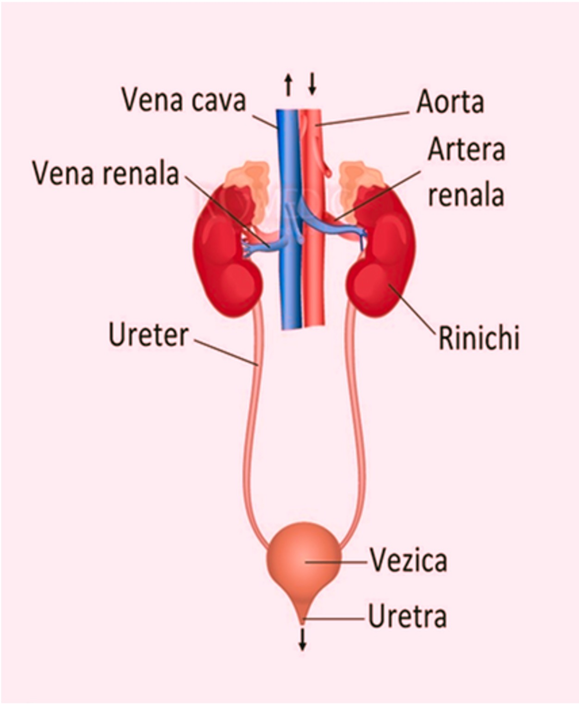
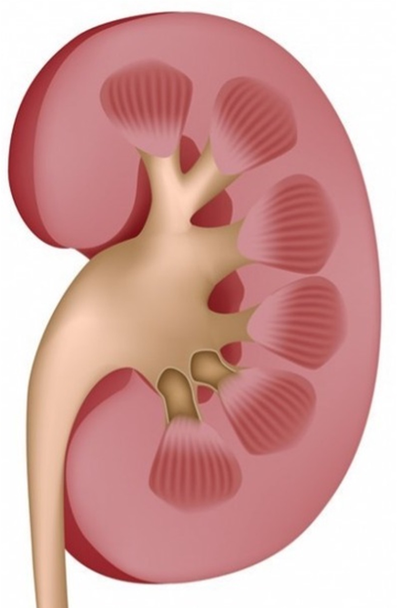
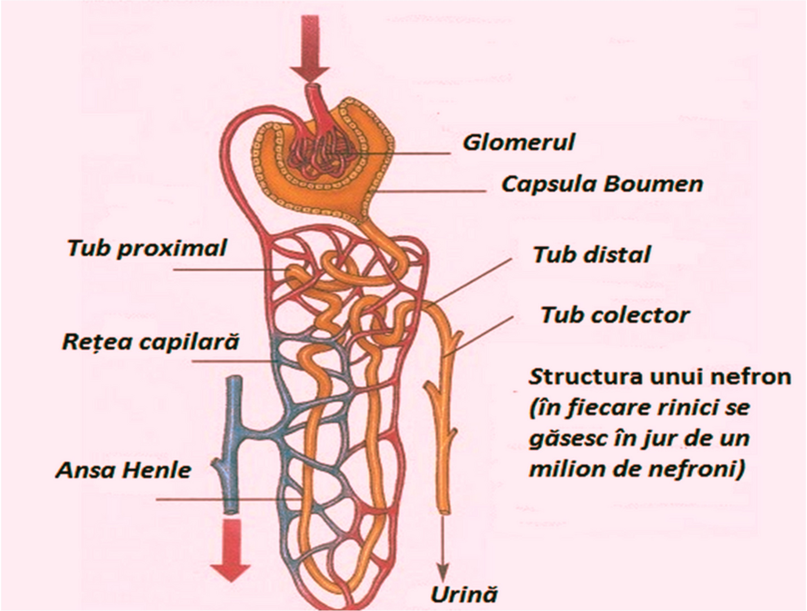
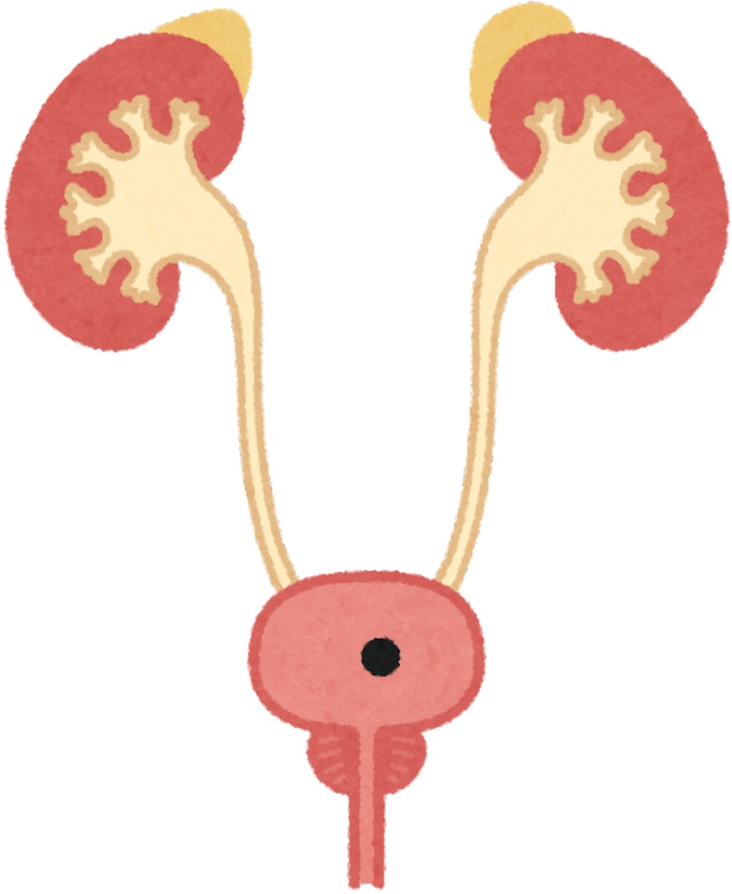
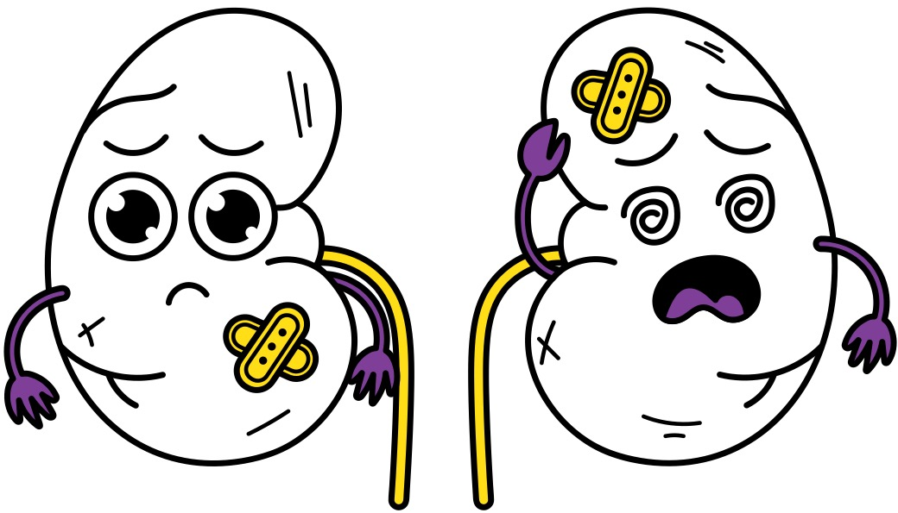

Despre sistemul excretor
Sistemul excretor uman este ansamblul de organe (rinichi, uretere, vezică urinară, uretra) responsabil cu eliminarea produșilor finali de metabolism și a substanțelor toxice din sânge, menținând astfel homeostazia (echilibrul mediului intern). Acesta reglează cantitatea de apă și săruri din corp prin formarea și eliminarea urinei.
Principalul produs eliminat este urina.

Componentele principale ale aparatului urinar (sistemul excretor în sens restrâns):
- Rinichii: – Organe pereche, situate în cavitatea abdominală, care filtrează sângele și formează urina.
- Ureterele – Tuburi care transportă urina de la rinichi la vezica urinară.
- Vezica urinară – Organ muscular ce stochează urina.
- Uretra – Conduct prin care urina este eliminată din corp.

Rinichii
Rinichii sunt organe pereche, localizate în cavitatea abdominală. Au forma unor boabe de fasole și sunt protejați de o capsulă fibroasă.
Structura rinichiului:
- Zona corticală – conține glomeruli și vase de sânge
- Zona medulară – formată din piramide renale
Rinichii filtrează sângele și elimină toxinele sub formă de urină.

Nefronul
Nefronul este unitatea structurală și funcțională a rinichiului.
- Capsula Bowman
- Glomerul vascular
- Tub urinifer
- Tub colector
La nivelul nefronului are loc filtrarea sângelui și formarea urinei.

Căile urinare
Căile urinare transportă și elimină urina din organism.
- Calice mici și mari
- Pelvis renal
- Uretere
- Vezica urinară
- Uretra

Bolile sistemului excretor
afectează eliminarea deșeurilor metabolice și pot include infecții, inflamații sau formarea de calculi (pietre). Cele mai comune afecțiuni sunt cistita, pielonefrita, litiaza urinară (calculi renali) și insuficiența renală, care pot apărea din cauza alimentației neechilibrate, a infecțiilor bacteriene sau a altor factori.
- Litiaza urinară (calculoza renală):
– Formarea de calculi (sedimente de acid uric, săruri de fosfat, carbonat) în rinichi (parenchim, calice sau pelvis).
- Cistita – Inflamația vezicii urinare, de obicei cauzată de o infecție bacteriană.
- Pielonefrita – Infecție a rinichiului, adesea o complicație a unei infecții urinare inferioare.
- Glomerulonefrita: – Afecțiune inflamatorie a glomerulilor renali, care afectează capacitatea de filtrare a rinichilor.
- Insuficiența renală: – Incapacitatea rinichilor de a filtra deșeurile din sânge, putând fi acută sau cronică.
Pentru a menține rinichii sănătoși, este important să bem apă suficientă și să avem un stil de viață echilibrat.
